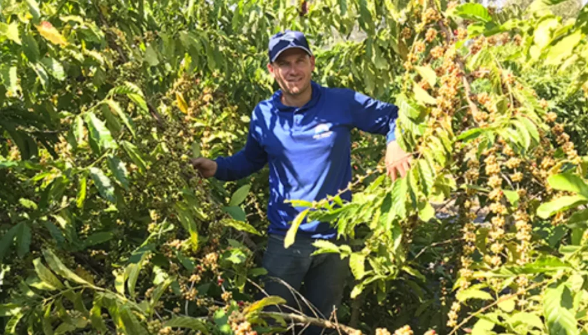

Soja
Resultados em soja com Litho Plant
Depoimento de produtor que utiliza os programas Litho Plant em soja, com ganhos em produtividade mesmo sob estresse hídrico.
“Eu uso os produtos Litho Plant há mais de 8 anos. Já usei praticamente toda a linha. Tive uma lavoura que recebeu o tratamento Litho Plant desde o início e mesmo enfrentando um período de seca, ficando aproximadamente 25 dias sem receber água, ela produziu, aos 2 anos de idade, 42 sacas de café/ha.”
Produtor: Deângelo Rigatto
Propriedade: Sítio Rigatto – Córrego Veloso, Chumbado – Sooretama/ES
O uso contínuo dos biofertilizantes Litho Plant fortalece o sistema radicular, melhora o aproveitamento de água e nutrientes e ajuda a manter a lavoura produtiva em anos desafiadores.
Ver mais resultados em soja